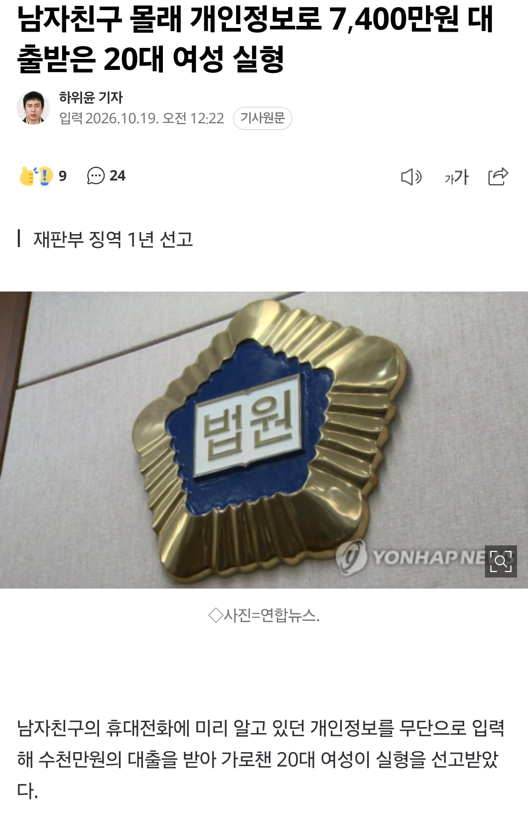

돈없다고 그냥 배째라고 하면 남자도 골치아프지 않나..
골치아픈건 대출해준 회사지 남자가 골치아플껀 없지ㅋㅋㅋ
배 째면 달라짐?
저 경우엔 채무이행 할 사람이 여자로 넘어가게됨 ㅋㅋㅋ
채무부존재소송하면 끝임. 저런 경우엔 대출해준 업체가 본인확인 제대로 안해서 생긴거라 남자가 갚을일은 없음.
그 소송이 ㅈ같지ㅠㅠㅠ
그럼 뭐 아무 사람하고도 인간관계를 갖지 말아야지 뭐
남자가 왜 골치아퍼 ㅋㅋㅋㅋ 개인정보 도용당한거 법원에서 혐의나왔는데
원래는 평화로울일상이었을텐데
저런 사태를 맞딱들이는것 자체가 골치아프지
너도 한번해봐 송사가 얼마나 ㅈ같은가
실형났으면 남자 골치아플일 없지
ㄴㄴ 채무부존재로 남자는 채무 피해가고
업체측에선 형사재판 결과 가지고 여자한테 동 체무 및 이자 전부 민사로 걸게됨
실형나와서 1년간 감옥에 있어서 변제 불가니까 법정 최고 이자율인 20%(원래 24.5%에서 개정됨)가 강제로 붙음
징역1년이면 대출금은 다시 돌려주는 조건이지?
피해 회복 여부에 대한 내용은 보통 보도가 안돼서 알 수 없지
아마 형사 판결을 바탕으로 민사를 따로 걸어야 할듯
남자는 대출 자체가 무효고, 대출 해준 곳에서 여자한테 반환 소송 걸어야됨.
대출 무효 일지 아닐지도 싸워봐야 알듯??
저런 판례 많음. 남의 개인정보 도용하던지, 몰래 알뜰폰같은거 개설해서 대출 땡겨버리던지.
대부분 채무부존재소송하면 도용당한 피해자가 갚진 않음. 회사쪽에서 대출해줄떄 본인확인 잘했어야지 이논리로 끝임.
여자가 실형 받을 걸로봐서는 아마 무효 나올거같음
채무이행대상자가 저 여자로 바뀌는건가?
만약 남친이 저 사건으로 신용등급이 떨어졌다면 바로 다시 원상복구가 되나?
저 사건이 발생한 최초 시점으로 롤백
그건 다행이네 ㄹㅇ
아니 안잡힐꺼라 생각한거냐??????? 아니 뭐 100만원도 아니고
이게 보이스피싱이지
애초에 범죄라고 생각을 못하는건가 ㅋㅋㅋㅋ
머리가 나빠도 정도가 있지
ㅋㅋㅋㅋㅋ 아니 뇌구조가 어떻길레
저게 저렇게 쉽게되나 당장 필요한 서류에 인감도 필요 할텐데
요즘 신용도 딸깍으로 나오는 돈이 꽤 많음. 신분증 사진이랑 ars 인증정도로 몇백에서 천까지는 나오는 곳 많으니까
한 곳에서 크게 대출 생기는건 깐깐한데 무슨 비상금대출이니 하는건 딸깍인 곳이 많아서 그거 여러곳 돌리는거임.
왜 7469만원 아니지?


업체도 존나 모자란새끼들이네
저거 업체도 일부 책임지는게있을탠데
이제 본인 채무가 됐네